01
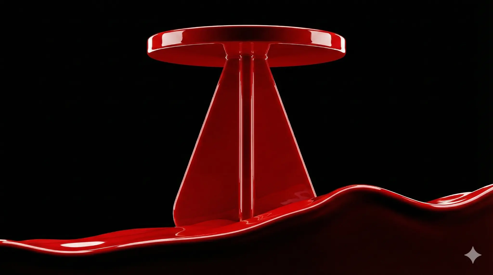Concept 01
DEEP TEAL OCEAN
Epic Paint Storm
→Crimson → Deep Teal
Kling AI Prompt
A cinematic 4K video. The sculptural deep teal side table must remain completely unchanged in shape, color, and structure — a solid, rigid object. It stands firm as a vast, stormy ocean of thick, glossy deep teal paint crashes and swirls around its base in ultra slow motion. Giant waves of paint crest and break. The camera performs a dramatic, low-angle dolly-in, pushing through the turbulent liquid. The atmosphere is epic, powerful, and intensely artistic. High-contrast lighting creates sharp, moving reflections on the paint ocean. The object never moves or deforms.
Epic Scale
연출 의도
딥 틸 페인트의 바다 속에서도 흔들리지 않는 존재감. 차가운 컬러가 만드는 압도적 스케일.
02
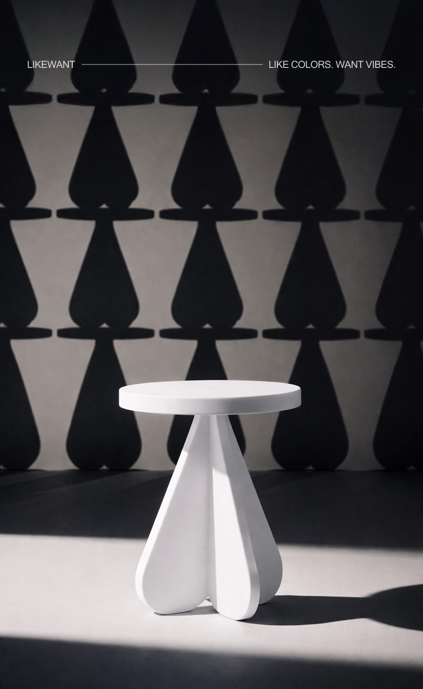Concept 02
GRAPHITE SHADOW
Dynamic Light Projection
→White → Graphite Grey
Kling AI Prompt
A cinematic 4K monochrome video. The matte graphite grey side table must remain completely unchanged in shape, color, and structure — a solid, rigid object. Complex, sharp-edged architectural and geometric shadow patterns are projected onto the table and the surrounding dark grey walls. These projected shadows rapidly shift, rotate, and morph, creating a dynamic, large-scale light show. The camera is completely static. The table never moves or deforms. Only the projected light and shadows move. The mood is chic, graphically bold, and high-tech.
Projection Art
연출 의도
그래파이트 그레이 위에서 춤추는 건축적 프로젝션. 무채색의 극한 대비.
03

Concept 03
LIQUID MERCURY FIELD
Sci-Fi Orbit
→Royal Blue → Mercury Chrome
Kling AI Prompt
An ultra-smooth 4K sci-fi video. The liquid mercury chrome side table must remain completely unchanged in shape, color, and structure — a solid, rigid object. It floats motionless in a pure black void. The camera executes a fast, seamless orbit around the table while dodging and weaving through hundreds of floating, sharp, geometric black shards that drift past like an asteroid field. The metallic surface creates distorted, moving reflections. The atmosphere is cold, dangerous, and epic. Smooth, continuous, high-speed motion with no cuts. The object never moves or deforms.
Sci-Fi
연출 의도
수은 크롬 표면이 소행성대의 파편들을 반사하며 빛나는 SF적 존재감.
04

Concept 04
MATTE BLACK HYPERSPACE
Extreme Pull-Back
→Vivid Blue → Matte Black
Kling AI Prompt
An extreme macro 4K video with a sci-fi feel. The deep matte black side table must remain completely unchanged in shape, color, and structure — a solid, rigid object. The camera starts extremely close on the flawless matte surface, then performs an incredibly fast, dramatic pull-back, revealing the full table in an instant, as if coming out of hyperspace. Light streaks and motion blur accompany the pull-back. Soft, diffused studio lighting. The atmosphere is premium, high-tech, and impactful. The object is completely static. Only the camera moves.
Speed Impact
연출 의도
매트 블랙의 완벽한 표면에서 시작, 하이퍼스페이스 급 초고속 리빌. 블랙의 절대적 존재감.
05
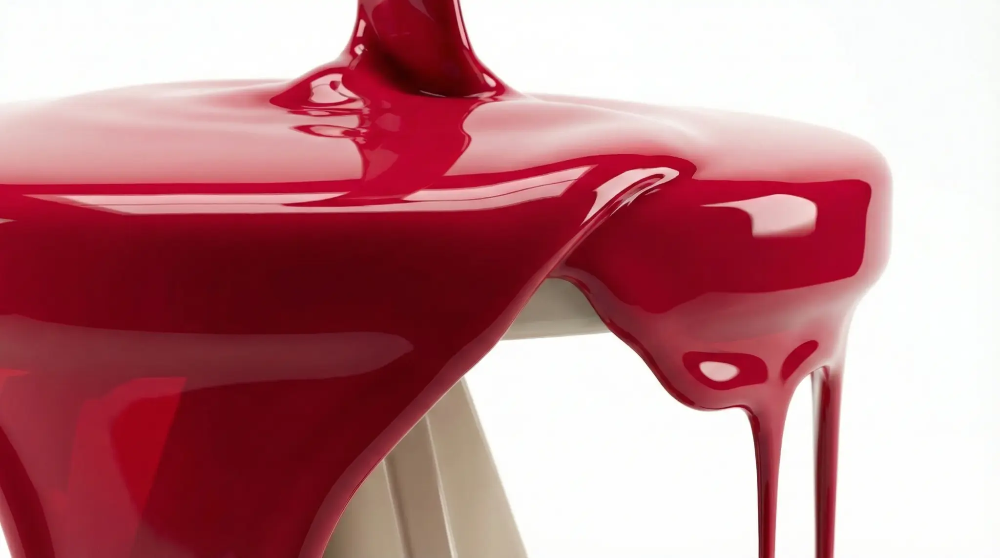Concept 05
PURE WHITE SUPERNOVA
Explosive Paint Burst
→Crimson → Pure White
Kling AI Prompt
An extreme macro 4K video in ultra slow motion. The pure white side table must remain completely unchanged in shape, color, and structure — a solid, rigid object. From behind the static table, a massive, silent explosion of thick, glossy pure white paint erupts outwards in all directions, like a supernova. Droplets and tendrils of paint expand and fill the entire frame against a clean black background. The table itself is untouched and remains perfectly still. Bright, high-key studio lighting. The atmosphere is powerful, pure, and hypnotic. The object never moves or deforms.
Explosion
연출 의도
블랙 배경 위 퓨어 화이트 초신성 폭발. 극한의 명암 대비가 만드는 순수한 파워.
06
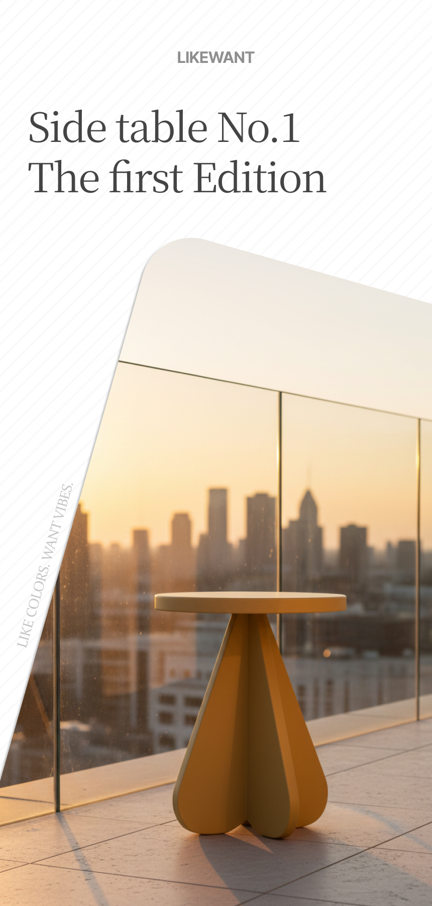Concept 06
BURGUNDY NIGHT
Time-Lapse Cityscape
→Mustard → Burgundy
Kling AI Prompt
A 4K cinematic hyperlapse video. The deep burgundy red side table must remain completely unchanged in shape, color, and structure — a solid, rigid object. It stands static on a rooftop terrace while the entire city behind it moves in a dramatic fast-forward time-lapse from golden hour to deep night. Clouds streak across the sky, sunlight sweeps across buildings, and city lights turn on and create massive light trails. The camera performs a slow, steady push-in on the unmoving table. The mood is urban, epic, and sophisticated. The object is the calm center of a chaotic world.
Hyperlapse
연출 의도
도시의 혼돈 속 버건디 레드의 고요한 중심. 럭셔리한 와인 톤이 야경과 만나는 시네마틱 무드.
07
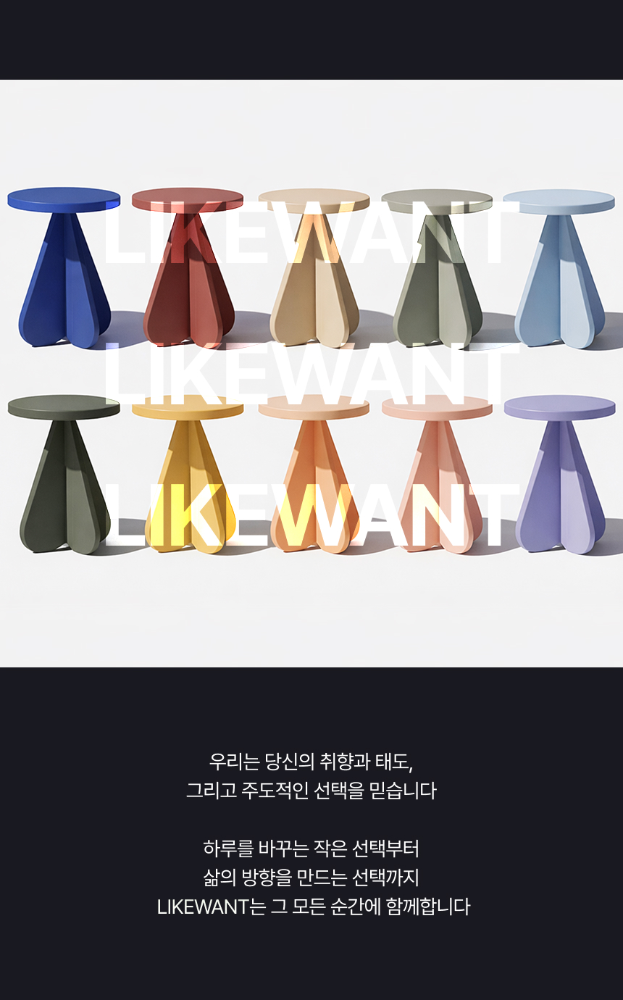Concept 07
MONOCHROME ASSEMBLY
Futuristic Factory
→Multi → Monochrome B&W
Kling AI Prompt
A 4K product showcase video with a futuristic scale. The side tables must remain completely unchanged in shape, color, and structure. The camera flies at high speed down an infinite, futuristic assembly line. Hundreds of side tables in a monochrome palette — pure white, light grey, charcoal, matte black — glide past on clean, white conveyor belts. Robotic arms perform quality checks with laser scanners. The environment is a vast, clean, white industrial space. The atmosphere is confident, high-tech, and epic in scale. Steady, high-speed forward dolly movement.
Mass Scale
연출 의도
무채색 그라데이션으로 통일된 무한 조립 라인. B&W 디자인 언어의 산업적 스케일.
08
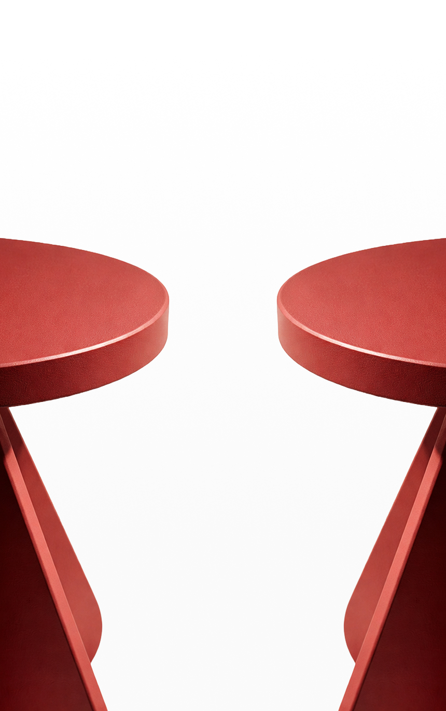Concept 08
ELECTRIC VIOLET REPULSION
Shockwave Physics
→Coral → Electric Violet
Kling AI Prompt
A 4K graphic video with sci-fi physics. The two electric violet side tables must remain completely unchanged in shape, color, and structure. They slide rapidly toward each other from opposite edges of the frame. Just before impact, a visible shockwave of shimmering energy erupts between them, violently repelling them back to their starting positions. This happens in a rhythmic loop. Clean black background. The atmosphere is bold, powerful, and tension-filled. The objects move but do not deform.
Sci-Fi Physics
연출 의도
일렉트릭 바이올렛의 충격파. 블랙 배경 위에서 보라빛 에너지가 폭발하는 SF적 긴장감.
09
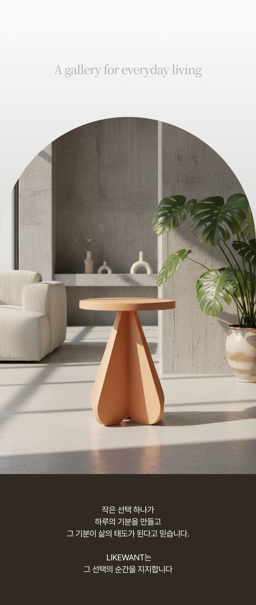Concept 09
BONE WHITE GALLERY
Surreal Architecture
→Peach → Bone White
Kling AI Prompt
A 4K architectural video with a surreal twist. The bone white side table must remain completely unchanged in shape, color, and structure — a solid, rigid object. It sits in the center of a minimalist gallery space. The surrounding concrete walls and arched openings begin to move and reconfigure, sliding and rotating to create new architectural compositions around the static table. Natural light shifts as the walls move. The camera is static. The object never moves. Only the architecture around it is in motion. The atmosphere is serene, surreal, and elevated.
Surreal
연출 의도
본 화이트의 정적 속에서 건축이 재구성되는 초현실. 가구가 공간을 장악하는 퍼포먼스.
10
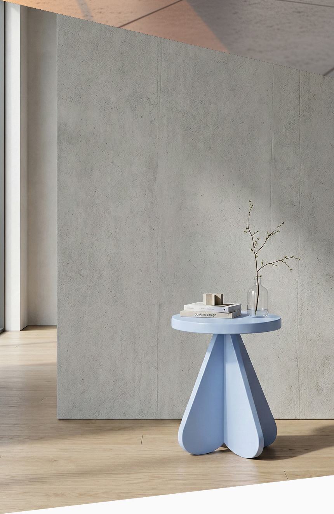Concept 10
TERRACOTTA GROWTH
Concrete Crystal Formation
→Baby Blue → Terracotta
Kling AI Prompt
A 4K architectural CGI video. The rich terracotta side table must remain completely unchanged in shape, color, and structure — a solid, rigid object. It stands on a flat concrete plane. Around it, massive brutalist concrete structures and walls grow rapidly from the ground, like crystals, eventually forming a complex architectural space around the table. The camera performs a slow orbit as the structures grow. The atmosphere is powerful, minimal, and architecturally refined. The object is static while the world builds around it.
CGI Architecture
연출 의도
테라코타의 대지적 존재감. 콘크리트 결정이 솟아오르며 만드는 원시적이고 건축적인 스케일.
11
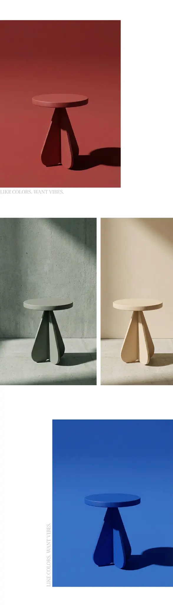Concept 11
MONOCHROME DIMENSION
Rapid Tone-on-Tone Flash
→Color → Monochrome
Kling AI Prompt
A 4K editorial montage video with a psychedelic effect. The side table must remain completely unchanged in shape and structure. The entire scene — the table, the wall, the floor — rapidly shifts through different monochrome tone-on-tone color dimensions in a fast-paced montage. Charcoal-on-charcoal, black-on-black, grey-on-grey, white-on-white. Each color dimension flashes for less than a second. The camera is static. The object never deforms, only its color and the environment's color change instantly. The atmosphere is editorial, bold, and visually arresting.
Color Flash
연출 의도
무채색 차원 이동. 블랙-차콜-그레이-화이트의 사이키델릭한 전환. B&W 철학의 극한 표현.
12
.png)
Concept 12
GUNMETAL ASSEMBLY
High-Tech Parts Assembly
→Deep Blue → Gunmetal Grey
Kling AI Prompt
A clean 4K product video with a high-tech CGI animation. The side table must end up in its perfect, unchanged final form. The video starts with the component parts of the gunmetal grey side table — the round tabletop and the three individual petal-like base pieces — flying into the frame from different directions. They expertly connect with a satisfying, precise click, assembling the table in mid-air against a pure white background. The camera is static. The parts move to assemble, but the final object is rigid and does not deform. The atmosphere is clean, precise, and futuristic.
CGI Assembly
연출 의도
건메탈 그레이 파츠의 정밀한 공중 조립. 산업적 메탈릭 톤이 하이테크 무드를 극대화.
13

Concept 13
OLIVE GREEN MONUMENT
Giant Skyscraper Reveal
→Blue-Violet → Olive Green
Kling AI Prompt
A 4K product hero video with an epic scale reveal. The side table must remain completely unchanged in shape, color, and structure. The camera starts on what appears to be a normal deep olive green side table. It then performs a very slow, dramatic pull-back to reveal the table is actually monumental in size, standing like a giant skyscraper in the middle of a futuristic, minimalist city at night. Tiny flying vehicles zip around its base. The atmosphere is awe-inspiring, elegant, and epic. The object is static. Only the camera moves.
Monumental
연출 의도
올리브 그린의 초고층 모뉴먼트. 자연적 컬러가 미래 도시 속에서 만드는 압도적 반전.
14
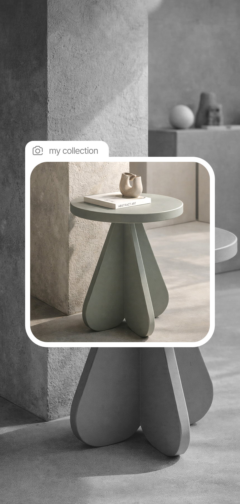Concept 14
BLACK PATTERN OVERLOAD
Hypnotic B&W Pattern Animation
→White → Matte Black
Kling AI Prompt
A 4K graphic video. The matte black side table must remain completely unchanged in shape, color, and structure — a solid, rigid object. It stands static in the center. The background wall, covered in a repeating black-and-white pattern of the table's silhouette, animates rapidly. The patterns shift, invert, scale, and ripple in a hypnotic, high-contrast visual overload. The camera is completely static. The object never moves or deforms. Only the background pattern is in motion. The atmosphere is bold, graphic, and mesmerizing.
Op-Art
연출 의도
매트 블랙이 B&W 패턴 폭주 속에서 만드는 시각적 블랙홀. 옵아트의 극한.
15
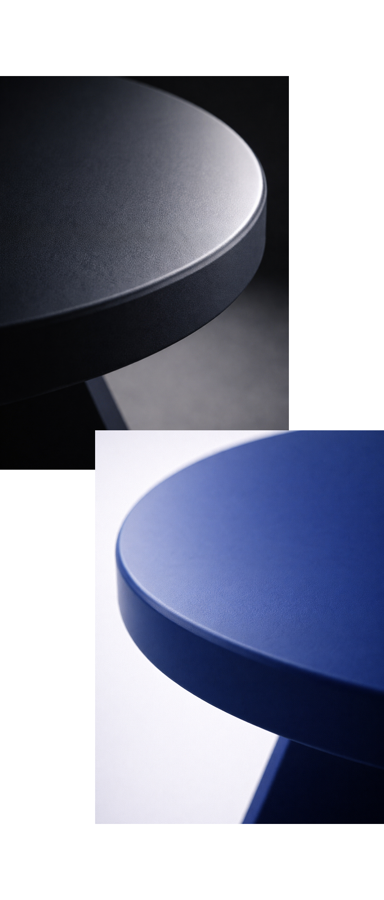Concept 15
BLACK & WHITE FLOODS
Massive Liquid Collision
→Red → Matte Black
Kling AI Prompt
A 4K graphic video with large-scale liquid simulation. The two matte black side tables must remain completely unchanged in shape, color, and structure. They stand symmetrically on a white floor. From the left, a massive flood of white paint rushes in. From the right, a massive flood of black paint rushes in. The two floods of paint collide violently in the center, between the two static tables, creating a spectacular splash and mixing in slow motion. The tables themselves are untouched by the paint. The camera is positioned from a high angle, looking down. The atmosphere is bold, graphic, and powerful.
Liquid Sim
연출 의도
블랙과 화이트 페인트의 대규모 충돌. likewant B&W 디자인 언어의 가장 직접적인 시각화.